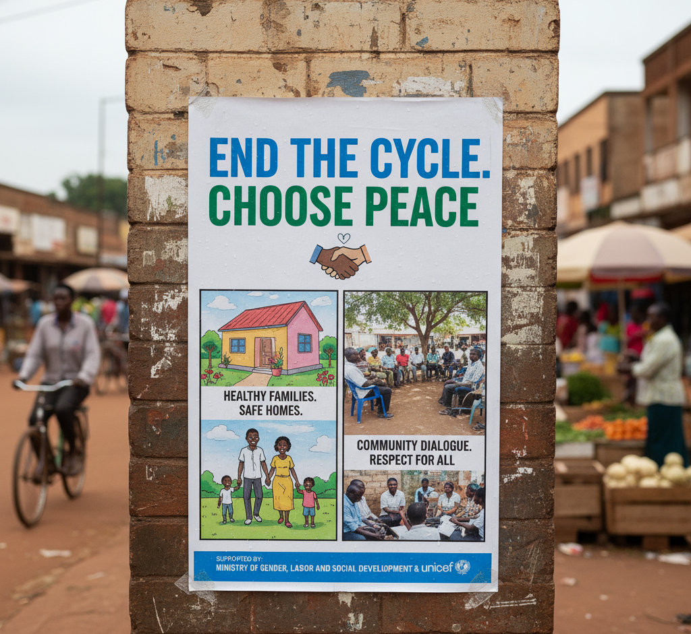
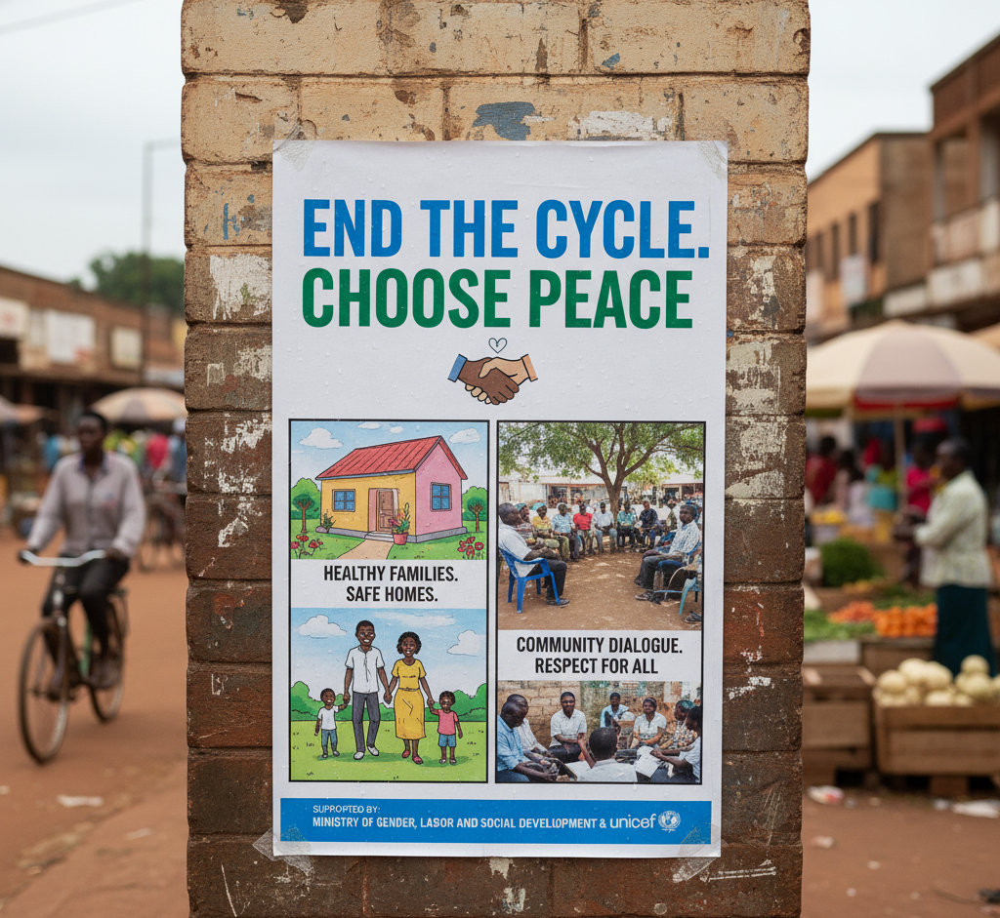

Intimate Partner Violence (IPV) in Uganda: An Implementation-Ready Field Phase Model is a MPH capstone applying WHO methods to design Uganda’s IPV field implementation model. This project presents an implementation-ready field framework for measuring Intimate Partner Violence (IPV) among women in Uganda.
Developed as part of the MPH Capstone at The George Washington University, it integrates WHO project-management and ethical research standards into a practical eight-week field design. The initiative demonstrates leadership in global health operations, gender-based violence prevention, and applied research methodology. It bridges academic analysis with real-world implementation planning, offering a scalable model for international public health programs.

Led a digital transformation leveraging Generative AI and predictive analytics. The project achieved a 15% increase in listener engagement and a 25% gain in production efficiency within six months, validating a data-driven strategy that aligned near-perfectly with forecasted growth.